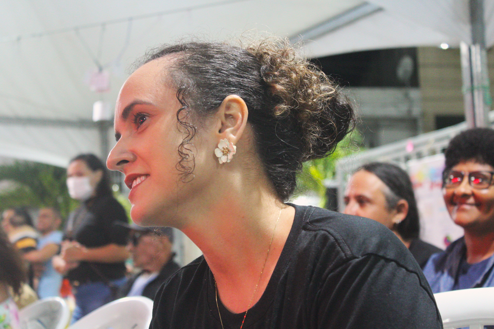

O Paraíba ponto Cultural esteve no dia 18 de setembro em Lagoa de Roça realizando a cobertura da noite de atividades da FLILAR — Festa Literária de Lagoa de Roça. Em sua quarta edição, a festa é organizada pelas professoras Isabelly Chaves, Evyllen Fernandes e Anielle Murany.
Durante a cobertura, Isabelly e Evyllen concederam uma entrevista ao Paraíba ponto Cultural, na qual abordaram os diferenciais desta edição, a participação das escolas e dos estudantes, o envolvimento da comunidade, os autores homenageados, o trabalho de artistas locais, o planejamento da festa e os desafios para sua realização.

Carlos Alberto — O que vocês destacariam como diferencial da FLILAR neste ano?
Isabelly Chaves — O diferencial da festa, da quarta edição da FLILAR, é a democratização do espaço. Nós saímos de espaços fechados, em que o público é limitado, para ir para um território que é público, em que os transeuntes têm acesso. Então, é um território democrático. Eu acho que isso é um ponto de grande importância para o avanço da FLILAR.
Carlos Alberto — Quantas escolas estão participando desta edição da FLILAR e como tem ocorrido esse engajamento?
Evyllen Fernandes — Nós temos aí quase em torno de dez escolas, mas esse engajamento vem aumentando significativamente conforme as edições vão se passando e as gestões escolares vão percebendo a importância de os alunos apresentarem seus trabalhos de leitura nesses eventos, porque está trazendo muita exposição aos trabalhos dos estudantes. E isso está trazendo mais alunos do nosso município para participar da FLILAR.

Carlos Alberto — Sabemos da dificuldade de engajar os alunos e envolvê-los nesse tipo de atividade. Como vocês avaliam a participação dos estudantes a partir de ações como a FLILAR?
Isabelly Chaves — Eu acho que tem sido surpreendente a participação dos estudantes e a participação da comunidade, porque hoje a gente soube até que a família está pedindo para que a escola coloque o seu filho para participar da FLILAR. Então, a gente vê que o percurso de semear está produzindo efeitos. Inclusive, a gente teve agora recentemente uma aluna que participou da terceira edição da FLILAR e que agora tornou-se ilustradora do jovem escritor paraibano João Miguel. Então, a gente vê que esse engajamento ultrapassa os limites de Lagoa de Roça.
Carlos Alberto — Quem são os homenageados desta edição da FLILAR?
Evyllen Fernandes — Este ano nós destacamos Mirtes Sulpino e José Carlos Silva. A escolha desses autores foi especialmente pelo fato de eles trabalharem a natureza do nosso bioma, tanto da nossa Caatinga como o envolvimento cultural que a Caatinga tem através das tradições e das pessoas que aqui vivem. Além do fato de que esses dois autores conseguem perpassar tanto pelo ensino infantil como pelo ensino médio, o ensino fundamental dos anos finais. Então, qualquer idade, a gente conseguia trabalhar esses dois autores com muita facilidade e com muito carinho, porque eles trabalham com carinho especial para o nosso bioma.
Carlos Alberto — A organização de um evento desse porte é necessariamente fruto de muitas mãos. Considerando todo o planejamento e as articulações necessárias para a realização da festa, quando efetivamente começa a preparação da FLILAR? Quantas pessoas estão envolvidas nesse processo?
Isabelly Chaves — A FLILAR não ocorre somente em setembro. A FLILAR começa no começo do ano, com os projetos que a gente proporciona e com as parcerias que a gente tem para levar até as escolas. Mas, assim, na verdade, esse projeto sai do chão da escola, porque quem está mesmo ativamente, quem planeja, quem traz a mão de obra, de trabalho, são três professoras: Isabelly, Evelyn e Anielle. E aí a comunidade abraça, monitores chegam e vão colaborando conosco.
Carlos Alberto — Além dos alunos das escolas, como a comunidade de Lagoa de Roça se envolve com a FLILAR?
Evyllen Fernandes — Eles se envolvem em vários campos. Inicialmente, a raiz de tudo são as escolas, mas agora a gente tem muito mais envolvimento. A gente tem o artesanato da cidade, a gente tem os esportes que a cidade traz, a gente tem a capoeira, a gente tem a dança, o break. A gente tem, na nossa prefeitura, muitas atividades sociais, balé, dança, enfim, são atividades diversas. A feira da nossa cidade está envolvida aqui dentro da nossa comunidade. E a gente acaba trazendo as exposições que os próprios artistas locais, que muitas vezes não são conhecidos da nossa cidade, mas que eles são assim, dentro das suas próprias casas, eles vão mantendo essas atividades, e a gente vem trazendo todos eles para aparecer mesmo. A nossa intenção é trazer, fazer aparecer as pessoas que trabalham com a cultura, com a arte, com a literatura.
Carlos Alberto — Você comentou sobre um integrante da comunidade que utiliza materiais encontrados ou reaproveitados para produzir obras de arte. Poderia falar um pouco sobre ele e sobre esse trabalho?
Isabelly Chaves — Nós temos este ano a presença de Jean Felipe, que é da comunidade. E o interessante é que a gente vê que não são só pessoas acadêmicas. Aquela ideia de... São pessoas que têm a sintonia com a arte, a arte fazendo parte dessa sensibilidade. Então, nós temos hoje essa exposição de materiais que ele consegue, com seus olhos de artista, perceber no dia a dia, no andar pela rua. Então, transformou uma madeira em um objeto de arte.
Carlos Alberto — Um projeto dessa dimensão certamente também enfrenta dificuldades. Quais são hoje os maiores desafios para realizar um evento como a FLILAR?
Isabelly Chaves — Os desafios sempre são financeiros. A gente sabe que a cultura vem passando por esse processo, aos poucos, da comunidade, do poder público, de entender a importância, de que é necessária essa sensibilidade, esse olhar para a cultura, que é muito mais do que alimento. É alimento. A cultura é alimento. Então, o desafio sempre é esse aspecto de sensibilização do poder público, que a gente, aos poucos, tem conseguido ter esse entrelaçamento, que esperamos que consigamos bem mais.
“A cultura é alimento.”
— Isabelly Chaves
Evyllen Fernandes — E a importância da própria comunidade perceber o quanto que aqui dentro, nas nossas raízes, existe tanta arte que deve ser prestigiada. Então, apesar de que, a cada ano que passa, a nossa comunidade prestigia melhor os artistas da nossa terra, eu acredito que ainda necessitamos trazê-los mais para esses eventos, para que eles possam conhecer melhor como a comunidade trabalha a arte.
Carlos Alberto — Isabelly e Evyllen, muito obrigado pela colaboração com o Paraíba ponto Cultural. Desejo muito sucesso para a feira, para a festa literária, e sei que esse trabalho é um diferencial na região. Muito obrigado.
Isabelly Chaves — Nós que agradecemos a oportunidade de fazer parte do Paraíba ponto Cultural.